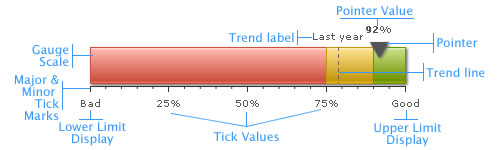

| Elements of the gauge |
A linear gauge chart can consist of the following elements:
Here we’ll see each of them in detail. Let’s first have a look at a standard linear gauge chart enlisting the various basic components: |
|  |
|
The linear gauge chart is defined by minimum and maximum values. Within that scale you can create various ranges to classify your data. There can be any number of ranges as you wish to. For each range, you’ll have to specify the minimum and maximum limits, a name for the range and the hex color for the range. Like in the above chart, we have the chart with upper limit as 9 and lower limit as 0. And the color ranges are 0-2, 2-6 and 6-9 and the range names are Micro, Moderate and Strong respectively.
Note: Each color range should have its own unique range value. That is say, if a range is defined as 0-2, the next range should have the minimum value as 2 necessarily. It cannot have anything other than this. Similarly, if the upper limit of the chart is 9, the last range should have max value as 9. Data pointer is the data indicator on the chart on the linear gauge charts. You can define the number of sides (polygonal shape) of the pointer, its border and background color and its radius. You can also define multiple pointers with different values and cosmetics for each one of them. Tick marks are the calibration marks on the horizontal scale to help interpret the reading. There are two types of tick marks which can be drawn on the chart:
For all the tick marks, you can specify the color and the height. You can also opt to show/hide the tick mark values. The linear gauge chart allows you to define trend points on the chart. For example, if you wish to highlight a certain value (say like last year’s average), you could use the trend point feature to do so. Annotations allow you to draw your own custom shapes, text, or load images on the chart.Now that we are aware of the basic components that make up a linear gauge, let's go ahead to build a sample linear gauge. |